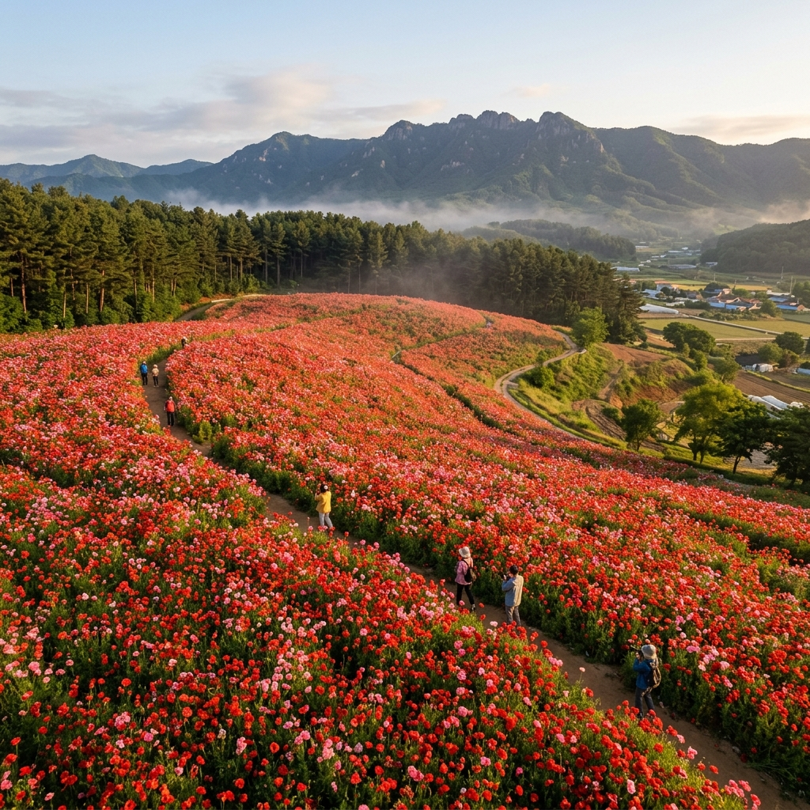
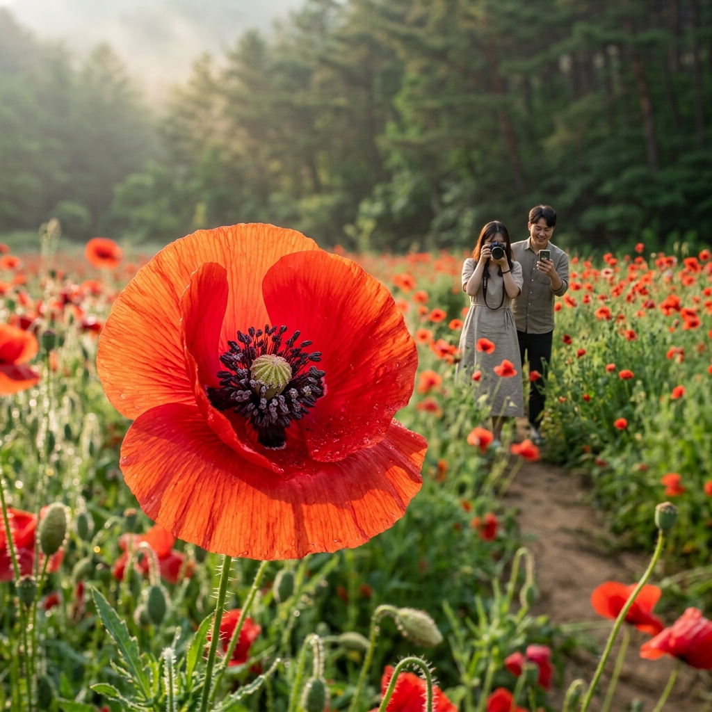
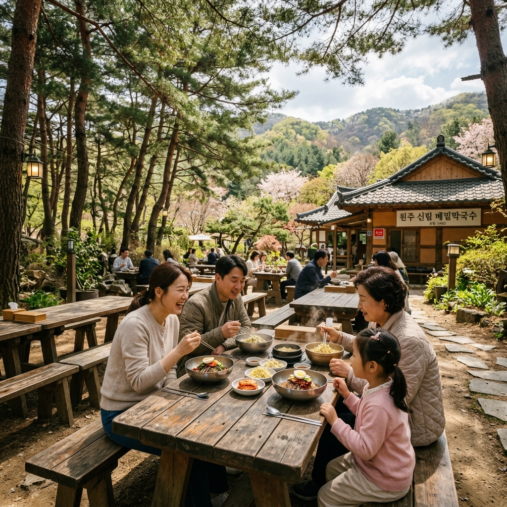

5월 20일(수) 아침, 강원도 원주 신림면 용수골 꽃양귀비 축제 개막일에 맞춰 직접 다녀왔습니다.
1만 3천 평 규모의 붉은 꽃밭이 펼쳐지는 풍경은 실제로 보면 사진보다 훨씬 더 웅장하고 인상적입니다.
이른 아침에 도착해 인파가 몰리기 전에 여유롭게 돌아볼 수 있었고, 꽃 상태도 최상이어서 좋은 사진을 많이 찍을 수 있었습니다.
축제는 2026년 5월 20일(수)~6월 7일(일)까지 운영되며, 입장은 무료입니다.
| 구분 | 상세 내용 |
|---|---|
| 행사 기간 | 2026.05.20(수) ~ 06.07(일) |
| 위치 | 강원도 원주시 신림면 용수골 |
| 면적 | 약 1만 3천 평 (43,000㎡) |
| 입장료 | 무료 (주차비 별도 현장 확인) |
오전 8시쯤 용수골에 도착하니 이미 서너 대의 차량이 주차되어 있었습니다.
방문객이 많지 않은 덕분에 꽃밭 안 오솔길 전체를 독차지하며 걸을 수 있어서 무척 좋았습니다.
꽃양귀비는 이슬이 마르기 전 아침 시간에 가장 싱싱하고 광채가 납니다.
개막 첫날이라 꽃이 70~80% 정도 개화한 상태였는데, 만개하면 더욱 장관일 것 같다는 기대감이 생겼습니다.
오전 10시 이후로 주말이 되면 주차장이 빠르게 차오른다는 것을 감안하면, 평일 이른 아침 방문이 가장 현명한 선택입니다.
꽃밭 전체를 한 바퀴 도는 데 약 40~60분이 소요되며, 사진을 많이 찍는다면 90분~2시간도 걸릴 수 있습니다.

원주시가 조성한 용수골 꽃양귀비밭은 신림면 산비탈에 약 1만 3천 평 규모로 펼쳐진 대규모 관상용 꽃 농장입니다.
꽃양귀비는 관상 목적으로만 재배되는 합법 품종이며, 아편 원료 양귀비와는 전혀 다른 식물입니다.
붉은색과 분홍색, 흰색이 뒤섞인 꽃밭이 산비탈을 가득 채우면, 고요한 강원도 산골이 일순간 화려한 색면 회화처럼 변신합니다.
주변을 둘러싼 소나무 숲과 완만한 언덕이 자연 배경이 되어 줘서 꽃과 숲을 함께 담는 사진이 특히 아름답습니다.
강원도 초여름을 대표하는 꽃 축제로 자리 잡았으며, 서울에서 1시간 30분 안팎 거리여서 수도권에서도 당일 방문하기 편리합니다.
2026년 꽃양귀비 축제는 5월 20일 수요일에 개막해 6월 7일 일요일까지 약 19일간 이어집니다.
꽃밭 자체의 입장은 무료이지만 공영 주차장 이용 시 주차비가 발생합니다.
현장 주차 공간이 넉넉하지 않아 주말 오전 10시 이전 도착을 적극 권장합니다.
공식 프로그램(버스킹, 체험 부스)은 주말 오전 10시~오후 5시에 집중 운영됩니다.
야간 개방은 없으므로 일몰 전에 방문을 마치는 것이 좋습니다.
직접 돌아보면서 가장 사진이 잘 나오는 세 군데를 발견했습니다.
첫 번째는 주차장 바로 위 언덕 정상입니다.
발아래로 꽃밭 전체가 펼쳐지고 하늘과 산 능선이 함께 담기는 광각 구도를 만들 수 있습니다.
두 번째는 꽃밭 안 오솔길 중간 지점으로, 양쪽에서 꽃이 쏟아지는 듯한 구도가 나옵니다.
키가 가슴 높이쯤에 피는 꽃 사이에 서면 꽃 터널 느낌이 나서 인물 사진에 매우 좋습니다.
세 번째는 소나무 숲과 꽃밭 경계부로, 초록 솔잎과 빨간 꽃의 색 대비가 강렬해 오후 역광에서 특히 빛납니다.

자가용 이용 시 원주 IC 또는 문막 IC에서 국도 19호선을 타고 신림면 방향으로 약 30분 달리면 됩니다.
내비게이션에 '원주시 신림면 용수골 꽃양귀비'로 검색하면 정확히 안내됩니다.
서울에서 출발한다면 서울양양고속도로나 영동고속도로를 이용해 원주 방향으로 진입하세요.
대중교통으로는 원주 시내(터미널·역)에서 신림면 방면 농어촌 버스 탑승 후 도보 10~15분 또는 택시 이용을 권장합니다.
KTX·ITX로 원주역 도착 후 시내버스를 이용하면 서울~용수골까지 총 1시간 30분~2시간 내외입니다.
꽃양귀비는 기온 15~22°C 범위에서 가장 왕성하게 핍니다.
2026년은 개막일인 5월 20일 기준 60~70% 개화가 예상되며, 날씨가 따뜻하게 이어진다면 5월 셋째 주 말~넷째 주 초가 절정이 될 것입니다.
비가 온 직후에는 꽃잎이 처지거나 낙화가 빨라지니, 맑은 날 선택이 중요합니다.
원주시 공식 SNS나 현지 방문자 블로그 후기를 통해 개화 현황을 출발 전에 꼭 확인하세요.
5월 말이 지나면 꽃이 서서히 지기 시작하므로, 6월 초에 방문한다면 남은 꽃을 확인하고 출발하는 것이 좋습니다.
용수골 꽃양귀비밭 방문을 시작으로 원주 인근 명소를 묶으면 더욱 알찬 하루 여행이 됩니다.
꽃밭에서 차로 15분 거리의 신림면 성황림은 천연기념물로 지정된 수백 년 고목들의 원시림으로, 초여름 신록이 특히 짙습니다.
원주를 대표하는 자연 명소인 치악산 구룡사는 꽃밭에서 40분 거리이며, 계곡물 소리와 사찰 풍경을 함께 즐길 수 있습니다.
원주 시내로 나오면 원주 중앙시장에서 메밀전, 황기 추어탕 등 강원도 향토 음식을 맛볼 수 있습니다.
하루 코스를 넉넉히 잡는다면 용수골 → 성황림 → 치악산 구룡사 순서를 추천합니다.
꽃밭 인근 신림면에는 소규모 향토 식당들이 있으며, 메밀막국수와 콩나물국밥을 1만 원 안팎으로 맛볼 수 있습니다.
주말 점심시간에는 자리가 빨리 차므로 오전 꽃밭 관람을 마치고 11시 30분쯤 일찍 자리를 잡는 것이 좋습니다.
원주 시내로 이동하면 황기 오리탕과 두릅나물 비빔밥이 이 시기 별미입니다.
꽃밭 내 간이 음식 부스가 운영될 수 있으므로 원주시 공지를 미리 확인해 두세요.
도시락을 직접 챙겨와 꽃밭 벤치에서 점심을 해결하는 방문객도 많습니다.

Q. 유모차 끌고 와도 괜찮을까요?
평지 구간은 유모차 이용이 가능하지만 경사진 오솔길 구간은 어렵습니다.
영아 동반 시 아기띠나 배낭형 캐리어를 추천합니다.
Q. 당일치기 가능한가요?
서울 기준으로 넉넉히 당일치기가 가능합니다.
오전 7시 출발하면 오전 중 꽃밭 관람을 마치고 오후에 원주 명소를 들렀다가 저녁 전에 귀경할 수 있습니다.
Q. 어떤 복장이 좋은가요?
흙길 구간이 있으므로 운동화를 신고, 낮 기온이 20~25°C이므로 반팔에 얇은 겉옷 하나를 챙기면 됩니다.
Q. 가장 사진 잘 찍히는 시간대는?
오전 7~10시 사이 이른 아침이 빛도 부드럽고 인파도 적어 최적입니다.